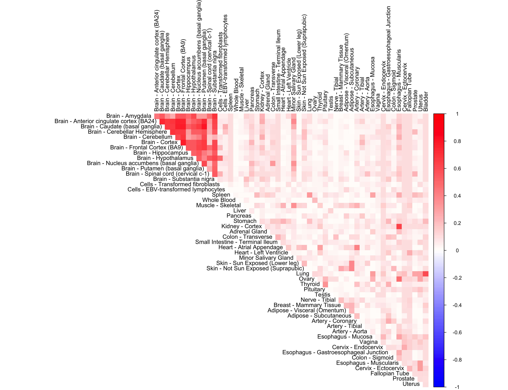

We perform adaptive correlation shrinkage analysis using the CorShrink R package on the subject by tissue expression data for the PLIN1 gene.
library(CorShrink)
library(corrplot)## corrplot 0.84 loadedlibrary(ggplot2)
library(gridExtra)
library(ashr)data("sample_by_feature_data")This data contains many NA values.We now run CorShrink on this data.
out <- CorShrinkData(sample_by_feature_data,
ash.control = list(mixcompdist = "normal",
control = list(maxiter = 1000)),
report_model = TRUE)order_index <- get(load("../shared_output/order_index.rda"))
data("pairwise_corr_matrix")
col2 <- c("blue", "white", "red")
corrplot(pairwise_corr_matrix[order_index, order_index], diag = FALSE,
col = colorRampPalette(col2)(200),
tl.pos = "td", tl.cex = 0.9, tl.col = "black",
rect.col = "white",na.label.col = "white",
method = "color", type = "upper") order_index <- get(load("../shared_output/order_index.rda"))
corrplot(out$cor[order_index, order_index], diag = FALSE,
col = colorRampPalette(col2)(200),
tl.pos = "td", tl.cex = 0.9, tl.col = "black",
rect.col = "white",na.label.col = "white",
method = "color", type = "upper") We look at the performance of non-parametric CorShrink
# cor_features <- cor(sample_by_feature_data, use= "pairwise.complete.obs")
# cor_vec <- cor_features[lower.tri(cor_features)]
# zscores <- 0.5*log((1+cor_vec)/(1-cor_vec))
# zscores[zscores == Inf] = 0
# zscores[zscores == -Inf] = 0
# data("common_samples")
# sd_zscores <- median(sqrt(1/(common_samples[lower.tri(common_samples)])), na.rm=TRUE)
#
# range <- 5*max(sqrt(zscores^2+sd_zscores^2), na.rm=TRUE)
range <- seq(-5, 5, length.out = 51)
lower <- range[1:(length(range)-1)]
upper <- range[2:length(range)]
g.init= unimix(pi=rep(1,50)/50, a=lower, b=upper)
out <- CorShrinkData(sample_by_feature_data, sd_boot = FALSE, image = "null",
ash.control = list(g = g.init, mode = NULL,
control = list(maxiter = 1000)),
report_model = TRUE)
corrplot(out$cor[order_index, order_index], diag = FALSE,
col = colorRampPalette(col2)(200),
tl.pos = "td", tl.cex = 0.9, tl.col = "black",
rect.col = "white",na.label.col = "white",
method = "color", type = "upper") range <- seq(-5, 5, length.out = 11)
lower <- range[1:(length(range)-1)]
upper <- range[2:length(range)]
g.init= unimix(pi=rep(1,10)/10, a=lower, b=upper)
out <- CorShrinkData(sample_by_feature_data, sd_boot = FALSE, image = "null",
ash.control = list(g = g.init, mode = NULL,
control = list(maxiter = 1000)),
report_model = TRUE)
corrplot(out$cor[order_index, order_index], diag = FALSE,
col = colorRampPalette(col2)(200),
tl.pos = "td", tl.cex = 0.9, tl.col = "black",
rect.col = "white",na.label.col = "white",
method = "color", type = "upper")out <- CorShrinkData(sample_by_feature_data,
ash.control = list(mixcompdist = "normal",
mode = "estimate",
control = list(maxiter = 1000)),
report_model = TRUE)
corrplot(out$cor[order_index, order_index], diag = FALSE,
col = colorRampPalette(col2)(200),
tl.pos = "td", tl.cex = 0.9, tl.col = "black",
rect.col = "white",na.label.col = "white",
method = "color", type = "upper")out <- CorShrinkData(sample_by_feature_data,
ash.control = list(mixcompdist = "+uniform"),
report_model = TRUE)
corrplot(out$cor[order_index, order_index], diag = FALSE,
col = colorRampPalette(col2)(200),
tl.pos = "td", tl.cex = 0.9, tl.col = "black",
rect.col = "white",na.label.col = "white",
method = "color", type = "upper")
This R Markdown site was created with workflowr